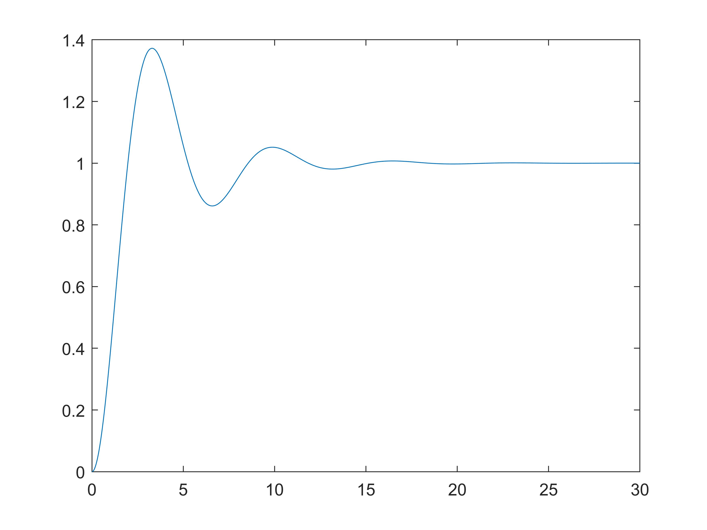
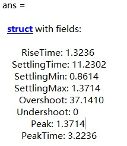
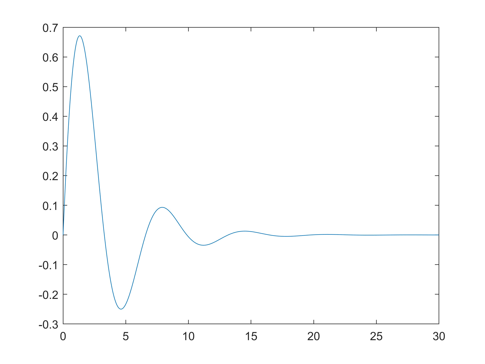
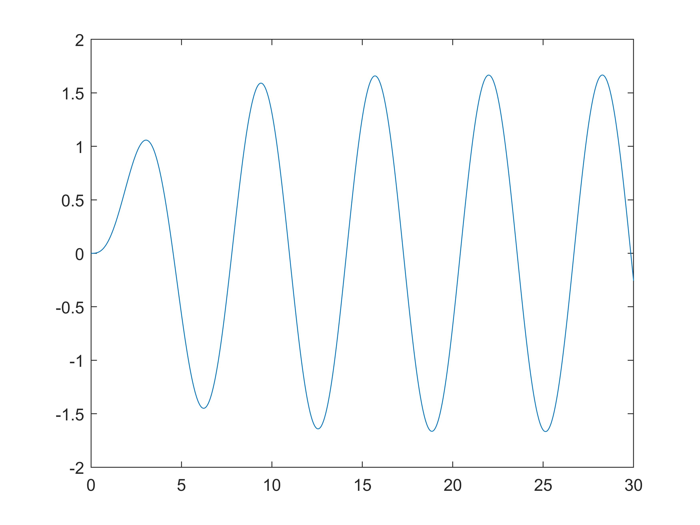
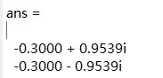
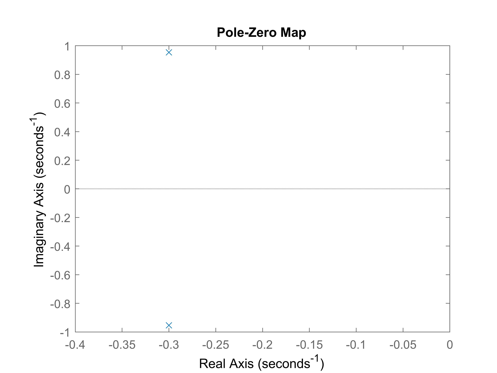
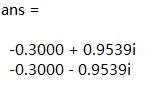

pkg load control;
The time response represents how the state of a dynamic system changes in time when subjected to a particular input, such as step response, impulse response and initial condition response. For some systems, we can analytically find a closed-form solution. However, for most systems, the closed-form analytical solutions are hard to find, which brings difficulties to the analysis of their time responses. Fortunately, Matlab provides powerful tools for analyzing the time responses of dynamic systems.
t = 0:dT:T;
step(sys, t);
t = 0:dT:T;
step(num, den, t);
t = 0:dT:T;
[y, t] = step(sys, t); or [y, t] = step(num, den, t);
plot(t, y);
stepinfo(y, t); or stepinfo(sys);
s = tf('s');
sys = 1/(s^2+0.6*s+1);
t = 0:0.001:30;
[y, t] = step(sys, t);
plot(t, y);
stepinfo(y, t)
 
t = 0:dt:T;
[y, t] = impulse(sys, t); or [y, t] = impulse(num, den, t);
plot(t, y);
s = tf('s');
sys = 1/(s^2+0.6*s+1);
t = 0:0.001:30;
[y, t] = impulse(sys, t);
plot(t, y);

t = 0:dt:T;
[y, t] = lsim(sys, u, t); or [y, t] = lsim(num, den, u, t);
plot(t, y);
s = tf('s');
sys = 1/(s^2+0.6*s+1);
t = 0:0.001:30;
[y, t] = lsim(sys, sin(t), t);
plot(t, y);

As we all know, stability analysis of the dynamic systems is one of the most important problems in linear systems and control. There are many ways to analyze the stability. Matlab provides great tools for stability analysis.
den = [denominators];
roots(den)
den = [1, 0.6, 1];
roots(den)

s = tf('s');
G = transFunc;
pole(G)
pzmap(G);
s = tf('s');
G = 1/(s^2+0.6*s+1);
pole(G)
pzmap(G);
axis([-0.4, 0, -1, 1]);
 